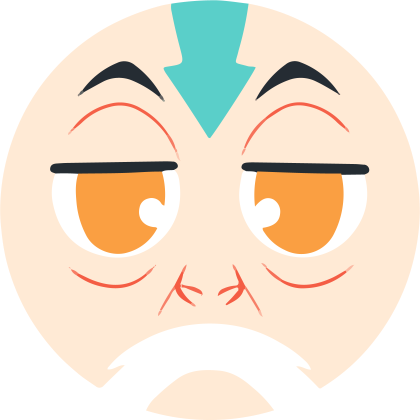
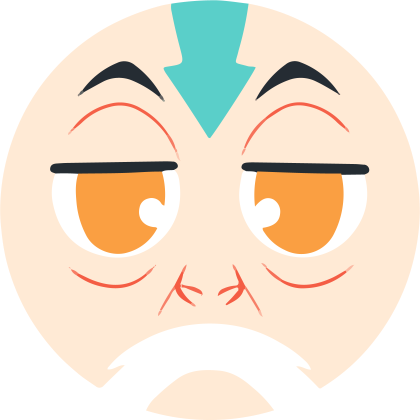
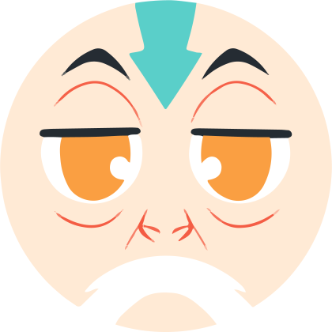

The Air Temples were built in lived in by people known as the Air Nomads. There were four air temples, each located in the far corners
of the world.
The Air Nomads were first gifted the ability to energybend by the Lion Turtles so they could protect themselves while they roamed
the Spirit Wilds and gathered food and resources. However, despite their Water, Earth, and Firebending counterparts, the original Air Nomads
coexisted peacefully with the spirits they shared the world with, and fostered a peaceful relationship between them. After the Lion Turtles rescinded
their roles as humanities protectors, the Air Nomads split apart to form villages and build the Air Temples.
However, twelve years after Avatar Roku passed, Fire Lord Sozin used Sozin's Comet to eliminate all Air Nomads. They were thought to be extinct until
Avatar Aang emerged from the ice 100 years later.
